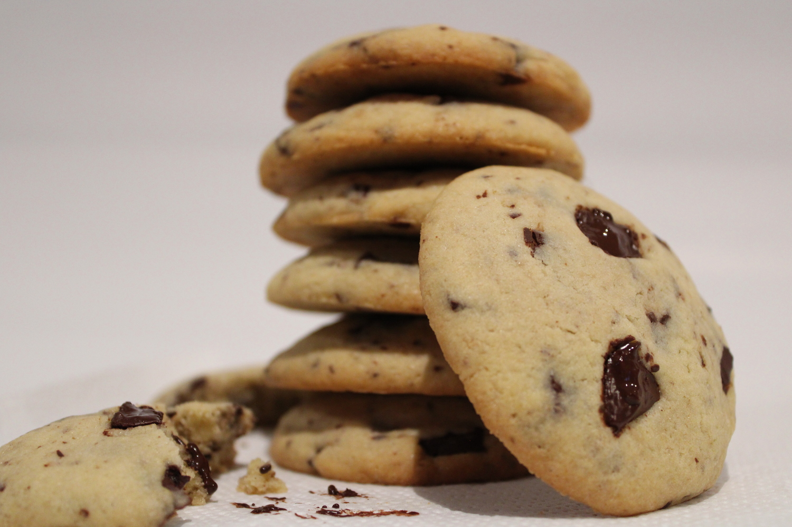
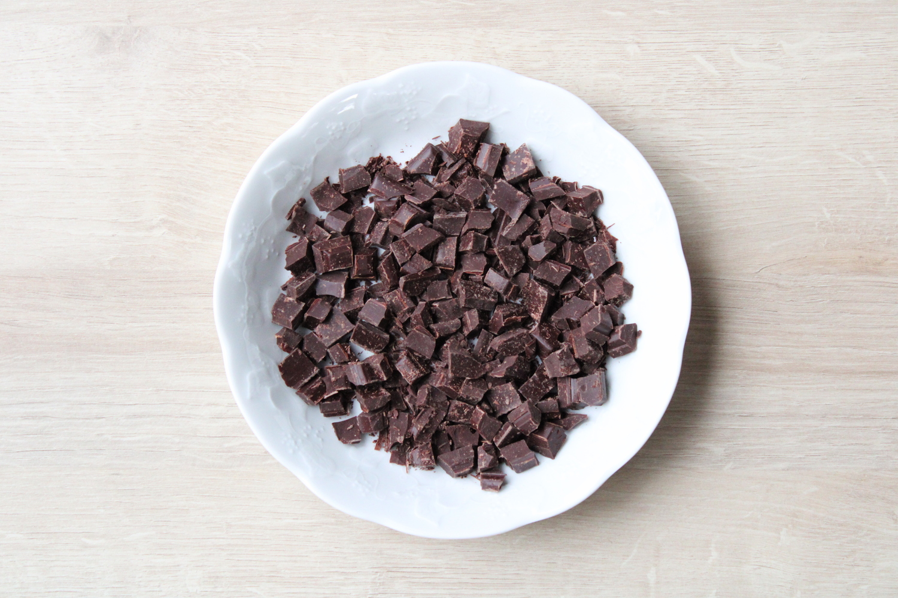
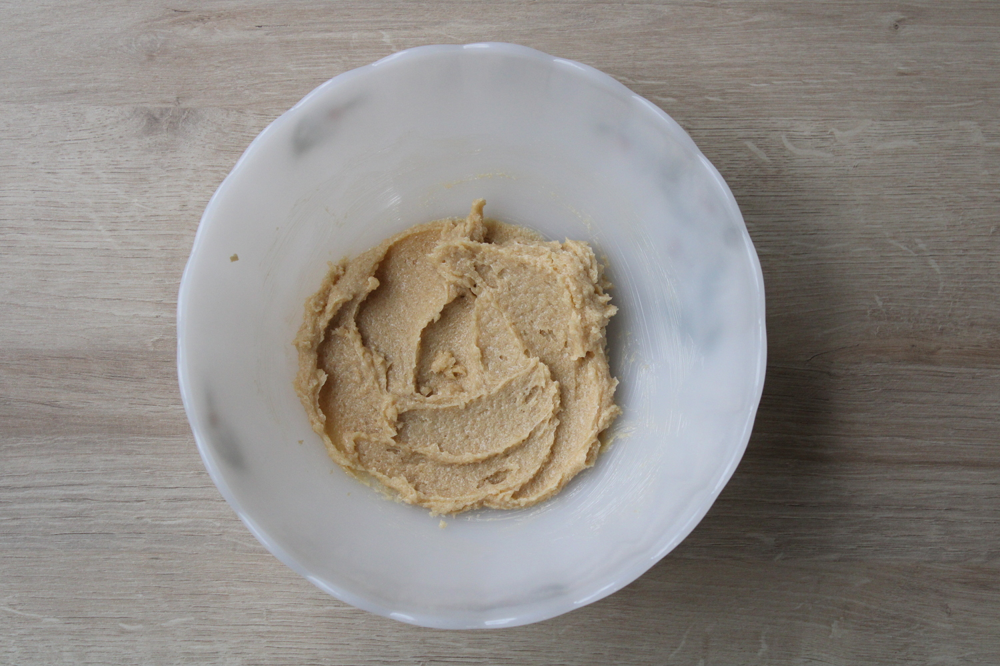
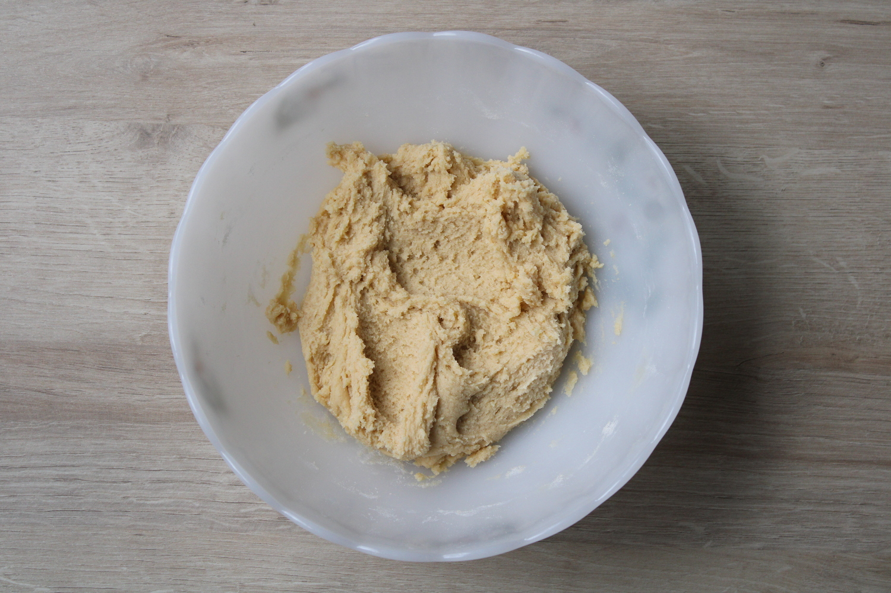
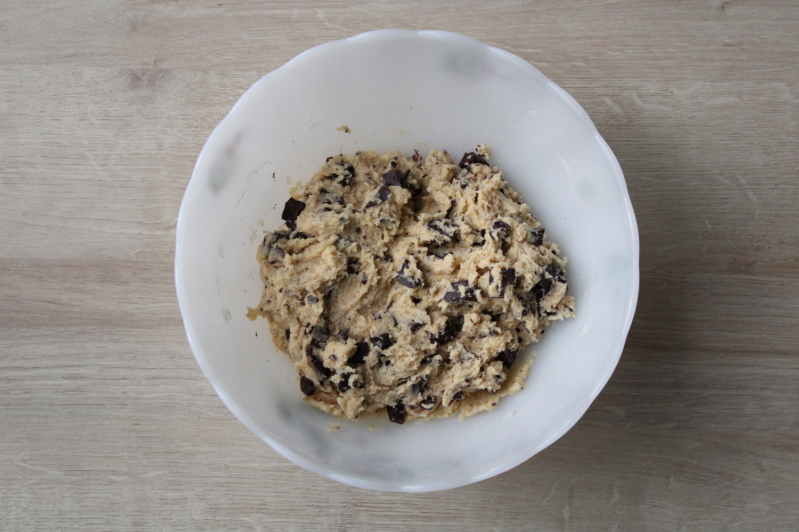
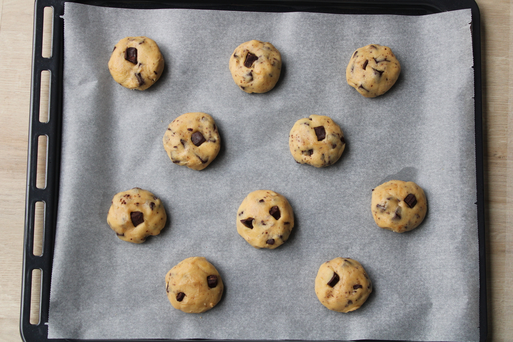
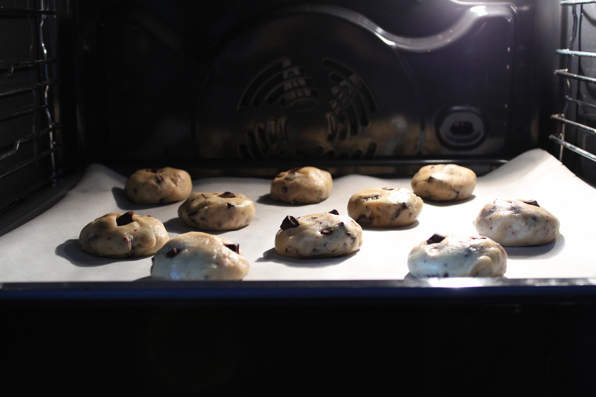

Cookies 
Ces cookies aux pépites de chocolat sont parfait pour le goûter. À la fois moelleux et fondants, ils sont faciles à réaliser et remplacent les gâteaux industriels.
| Temps total | Préparation | Cuisson | Niveau | Quantité |
|---|---|---|---|---|
| 30 min | 20 min | 10 min | Facile | 10 cookies |
Ingrédients
| Chocolat (ou pépites) | 125 g |
| Sucre | 90 g |
| Beurre | 90 g |
| Oeuf | 1 |
| Farine | 175 g |
| Levure chimique | 1/2 c.à.c |
| Sel | 1 pincée |
Note 1
Pensez à sortir le beurre du réfrigérateur à l'avance afin qu'il soit mou.
Préparation
- À l'aide d'un couteau, concassez le chocolat pour réaliser les pépites. Préchauffez le four à 180 °C. 
- Dans un saladier, mélangez bien le beurre mou avec le sucre. 
- Incorporez l'oeuf. Ajoutez la farine, le sel et la levure et mélangez à nouveau jusqu'à l'obtention d'une pâte homogène. 
- Ajoutez les pépites de chocolat, tout en en conservant quelques unes de côté pour la présentation. 
- Recouvrez la plaque du four de papier sulfurisé. Formez avec vos mains ou à l'aide de deux cuillères à soupe des petites boules de pâtes, que vous disposerez sur la plaque. Applatissez ensuite un peu les boules avec la paume de la main. 
- Vous pouvez à présent placer les pépites de chocolat restantes sur les boules et enfourner le tout 10 min à 180 °C, jusqu'à ce que les bords des cookies soient légèrement dorés. 
Note 2
Il faut faire attention à bien espacer les tas car la pâte s'étale lors de la cuisson.
Mon conseil

Laissez refroidir un peu les cookies avant de déguster. Vous pouvez également faire des cookies en variant les chocolats (chocolat noir, au lait ou blanc). Il peut être aussi intéressant d'incorporer des noisettes, des noix...